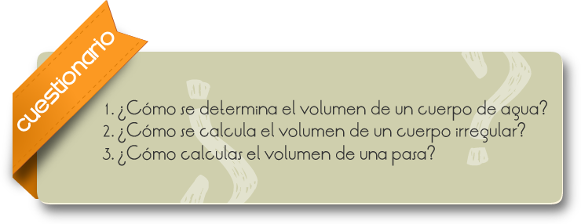

Los sólidos conservan su forma mientras no sean afectados por energía o una fuerza. Los líquidos y los gases, denominados fluidos, no mantienen una forma definida. Para contener un fluido, se utiliza un recipiente. Los fluidos toman la forma del recipiente que los contiene. Los cuerpos sólidos son rígidos en tanto que los líquidos y gases fluyen. La rigidez de los sólidos se aprecia cuando se intenta deformarlos, ya que algunos de ellos son más elásticos que otros. La electricidad es la propiedad por la cual un cuerpo recupera su forma original, cuando se retira una fuerza que lo deformaba. Los materiales deformados que no recuperan su forma original después retirar la fuerza, reciben el nombre de inelásticos.
Mostrar cómo podemos determinar el volumen de líquidos y de cuerpos Irregulares mediante métodos indirectos
EXPERIMENTO 1
1) Medir el volumen de un líquido (agua). Llenar con agua el vaso de precipitados.
2) Vertemos en el cilindro graduado exactamente 20 ml. de agua, después, por ejemplo, 78 ml de agua y para terminar 100 ml de agua. Practicamos la lectura del volumen de agua vertido. 100 ml corresponden a 100 cm cúbicos.
3) Vertemos el agua de nuevo en el vaso de precipitados.
EXPERIMENTO 2
1) Medir los lados del paralelepípedo de aluminio con ayuda del vernier. Calculamos el volumen con la fórmula largo x ancho x altura (V = I.b.h).
Volumen del paralelepípedo_____ cm cúbicos
EXPERIMENTO 3
1) Medir ahora el volumen del paralelepípedo de aluminio por medio de su desplazamiento del agua. Llenamos con agua el cilindro graduado hasta su marca para 70 ml.
2) Atamos un cordón al paralelepípedo de aluminio y lo sumergimos completamente en el agua del cilindró graduado. El nivel del agua del cilindro graduado aumenta. Leemos en la escala del cilindro graduado el aumento del volumen. El aumento del volumen corresponde al desplazamiento del agua por medio del paralelepípedo.
El paralelepípedo de aluminio ha desplazado___________ ml de agua.
El volumen del paralelepípedo es por lo tanto__________ cm cúbicos,
3) El resultado debe coincidir con el valor calculado del volumen, permitiéndose un pequeño error debido a inexactitudes durante la medida.
EXPERIMENTO 4
1) Medir como en el tercer experimento el volumen de un cuerpo sólido por medio del desplazamiento de agua. Ahora utilizamos, sin embargo, un cuerpo irregularmente formado. En el cilindro graduado se encuentran de nuevo 70 ml de agua. Atamos un cordón al platillo para pesas de ranura, cuatro pesos de ranura de 50 g.
2) Sumergimos estos cuerpos completamente en el agua del cilindro graduado.
3) Leemos el aumento del volumen; de esta manera podemos dar el volumen del cuerpo (sustraer 70 ml del nuevo valor).
El volumen del cuerpo irregular es de __________ cm. cúbicos.

Comentarios
Cuando un sólido no tiene una forma geométrica que permita determinar por cálculo su volumen, se mide éste indirectamente.
Supongamos que se desea saber el volumen de una piedra pequeña. Por lo general las piedras tienen una forma muy irregular, por lo que es muy difícil calcular su volumen comparándolo con un cubo unidad. En estos casos se calcula su volumen por desplazamiento de agua.
En un recipiente graduado vertemos un líquido y, a continuación, sumergimos en él, el sólido cuyo volumen deseamos conocer. El aumento de nivel del líquido nos permitirá, por sustracción, determinar el volumen del sólido. Normalmente el líquido empleado será agua, pero si el sólido se disuelve en ella (por ejemplo la sal o el azúcar) usaremos otro líquido que no disuelva al sólido.
RESULTADOS Y CONCLUSIONES
Podemos determinar el volumen de cuerpos formados irregularmente, determinando cuánta agua desplazan.